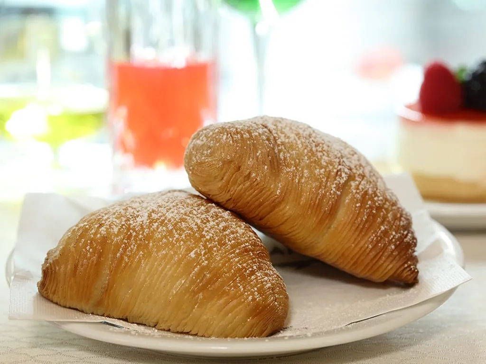

Sfogliatella riccia and frolla: from the Santa Rosa convent to Via Toledo
Born in a convent on the Amalfi Coast, it reached a spot a few steps from Piazza Carità in the early nineteenth century. The story of the pastry that crackles.

One bite is enough to recognise it: the sfogliatella riccia crackles, crumbles into a thousand golden layers and leaves icing sugar on your fingers. Inside, a soft filling of ricotta, semolina, eggs, sugar, candied fruit and cinnamon.
The Santa Rosa convent
The most often told story leads to Conca dei Marini, on the Amalfi Coast, in the monastery of Santa Rosa. There, in the seventeenth century, a nun is said to have used leftovers from the kitchen (semolina cooked in milk, ricotta and dried fruit) to create a new pastry, enclosed in a hood-shaped layer of dough. The Santa Rosa, the sfogliatella with custard and sour cherries, takes its name from that convent.
From Conca dei Marini to Via Toledo
Around 1818 the sfogliatella left the convent and arrived in Naples, along Via Toledo, a few steps from Piazza Carità. In the city the recipe was simplified: the custard and the sour cherries were left out, and the ricotta filling we know today remained. From there the sfogliatella became one of the symbols of the Neapolitan breakfast.
Riccia, frolla and Santa Rosa
- Riccia: the dough is stretched very thin, rolled up and cut into discs that open into crisp layers in the oven.
- Frolla: the same filling, but inside a smooth, soft shell of shortcrust pastry. More delicate, perfect if you do not want crumbs.
- Santa Rosa: the riccia with custard and sour cherries, the closest to the convent's recipe.
How to eat it
Warm, fresh from the oven, with icing sugar falling onto the plate. In Naples it goes with coffee, at the counter, at any hour of the morning. And if you love puff pastry you can also try the coda d'aragosta (“lobster tail”), a long sfogliatella filled with cream.